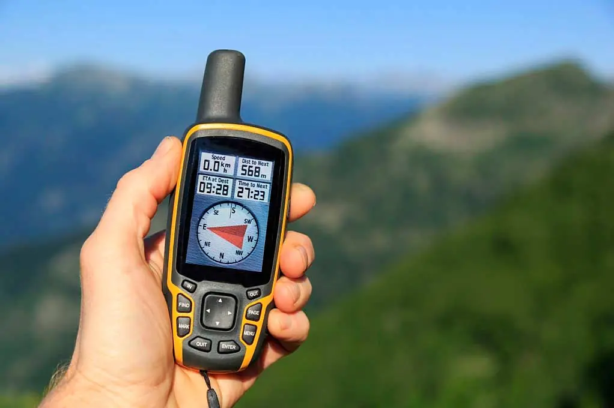
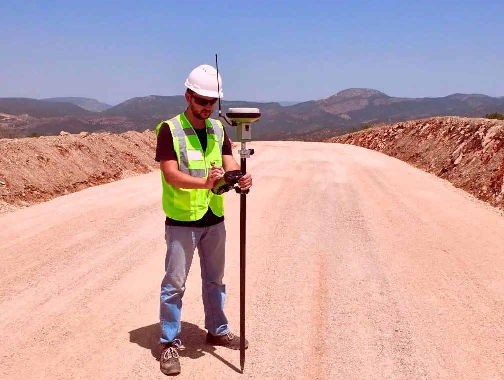

La confusión más frecuente
Cuando alguien ve un topógrafo trabajando con un equipo GNSS, la pregunta habitual es: “¿y eso no es lo mismo que el GPS del celular?”. La respuesta corta es no. La respuesta larga explica por qué esa diferencia importa mucho cuando está en juego la medición de un terreno.
Un GPS de mano, ya sea un Garmin de senderismo o un teléfono celular, te dice dónde estás con un margen de error de 3 a 10 metros. Para orientarte en un cerro o llegar a un destino eso sobra. Pero si necesitas medir el deslinde entre dos propiedades, ese margen puede significar medir varios metros fuera del límite real.
En un lote de 5.000 m² (el mínimo legal para subdivisión rural), un error de 5 metros en un deslinde equivale a desplazar el límite casi el ancho de una habitación. No es un error menor.

Los GPS de mano, como los modelos Garmin de senderismo o la aplicación del celular, están diseñados para navegación general. Su precisión de 3 a 10 metros es suficiente para llegar a un destino o marcar un punto de referencia.
El error proviene de cómo miden: calculan la distancia al satélite por el tiempo que tarda el código de la señal en llegar, y ese tiempo está afectado por la ionosfera, la troposfera y el rebote de la señal en objetos cercanos. Sin corrección diferencial, esos metros de error no se pueden eliminar.
Cómo mide cada uno
La diferencia de fondo está en qué parte de la señal satelital utiliza cada receptor para calcular su posición.
El GPS de mano mide por código. Cada satélite emite una señal con un código pseudoaleatorio (PRN). El receptor mide cuánto tiempo tardó ese código en llegar y calcula la distancia al satélite. El problema es que esa señal viaja a través de la ionosfera y la troposfera, que la desvían y retrasan de forma variable. Eso introduce errores de metros que el equipo no puede eliminar por sí solo.
El equipo GNSS profesional mide por fase de portadora. En vez de usar el código, mide la fase de la onda portadora de la señal, una onda con longitud de onda de apenas 19 centímetros. Medir la fase permite una resolución mucho mayor. Pero no es suficiente con eso: el equipo necesita además una corrección diferencial en tiempo real (RTK), que proviene de una estación base cuya posición se conoce con exactitud. Esa estación le dice al receptor móvil cuánto se está desviando la señal en ese momento, y el receptor corrige el error en tiempo real.
También hay una diferencia en las constelaciones que recibe cada uno. GPS es el sistema de satélites de Estados Unidos. GNSS es el término que engloba todos los sistemas: GPS (EE.UU.), GLONASS (Rusia), Galileo (Unión Europea) y BeiDou (China). Un receptor profesional escucha todos a la vez, lo que mejora la geometría de la solución y mantiene la precisión incluso en zonas con vegetación densa o topografía compleja.
Un equipo GNSS profesional con RTK opera de forma completamente distinta. El receptor del mástil (rover) mide la fase de la onda portadora, no el código, y recibe correcciones en tiempo real desde una estación base de posición conocida.
El resultado: precisión de 1 a 2 centímetros horizontal y 2 a 3 centímetros vertical. Suficiente para medir deslindes, generar planos con validez legal y producir el KML georreferenciado que exige el SAG.


La diferencia en números
Sin rodeos, lo que separa a un equipo del otro:
| Característica | GPS de mano | GNSS con RTK |
|---|---|---|
| Precisión horizontal | 3 a 10 metros | 1 a 2 centímetros |
| Precisión vertical | 5 a 15 metros | 2 a 3 centímetros |
| Método de medición | Código PRN | Fase de portadora |
| Corrección diferencial | No | Sí, en tiempo real |
| Constelaciones | GPS (EE.UU.) | GPS + GLONASS + Galileo + BeiDou |
| Válido para documentos legales | No | Sí |
Por qué importa en la práctica
Si el objetivo es navegar, hacer senderismo o marcar un punto de referencia aproximado, un GPS de mano es suficiente. El problema aparece cuando el resultado se va a usar en un documento con efectos legales.
Para subdividir un predio rústico, el SAG exige coordenadas UTM/WGS84 y un archivo KML georreferenciado que debe coincidir exactamente con el plano topográfico. Si ese archivo tiene un desplazamiento de 5 metros, perfectamente posible con un GPS de mano, el SAG detecta la inconsistencia en la revisión y devuelve el expediente. Eso extiende el proceso en semanas o meses.
Lo mismo aplica a cualquier trabajo donde los límites de un predio importan de verdad: compraventas, proyectos de construcción, deslindes entre vecinos, catastro rural. En todos esos contextos, un error de metros no es una imprecisión tolerable, es información incorrecta.
- Deslinde medido con error → escritura que no coincide con la realidad del terreno
- KML con desplazamiento → expediente SAG devuelto para corrección
- Superficie calculada con error → diferencias en m² que afectan el avalúo y el rol SII
Por eso el equipo que usa un topógrafo no es un GPS más caro, es un instrumento técnicamente distinto, diseñado para un tipo de trabajo distinto.
Si estás pensando en subdividir un terreno en Ñuble, lee también quién es el profesional más idóneo para hacer el plano de subdivisión y qué hace el tercero autorizado SAG en ese proceso.
Medimos con GNSS RTK, no con GPS de mano
Cada trabajo, subdivisión, deslinde, levantamiento de terreno, se realiza con equipo GNSS de doble frecuencia y corrección RTK. La diferencia de precisión se traduce directamente en documentos que el SAG, el Conservador y el SII aceptan sin observaciones.
Si tienes un predio en la Región de Ñuble y necesitas una medición, parte con una evaluación sin costo.